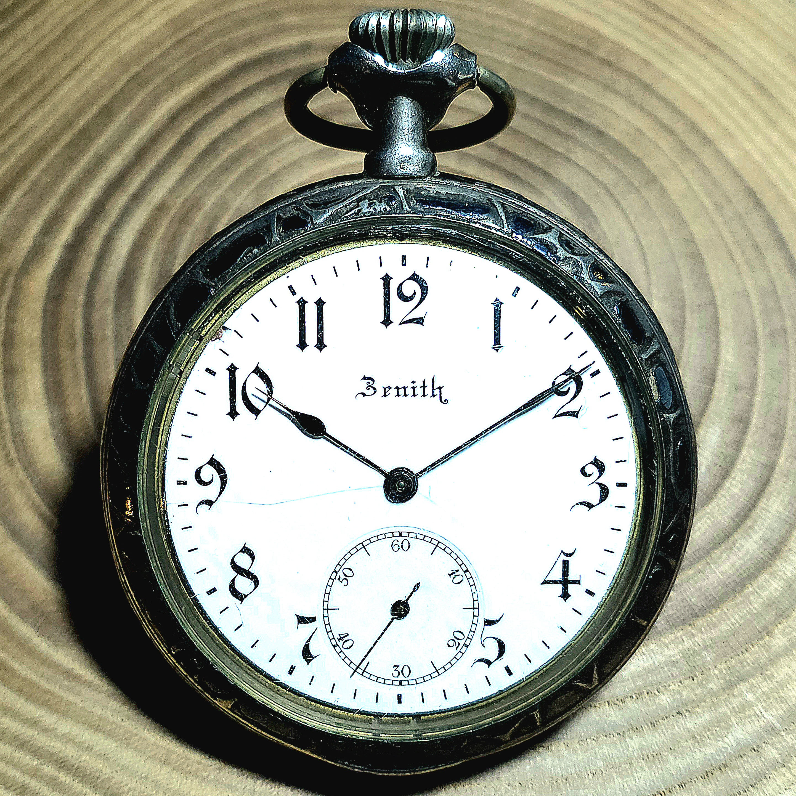
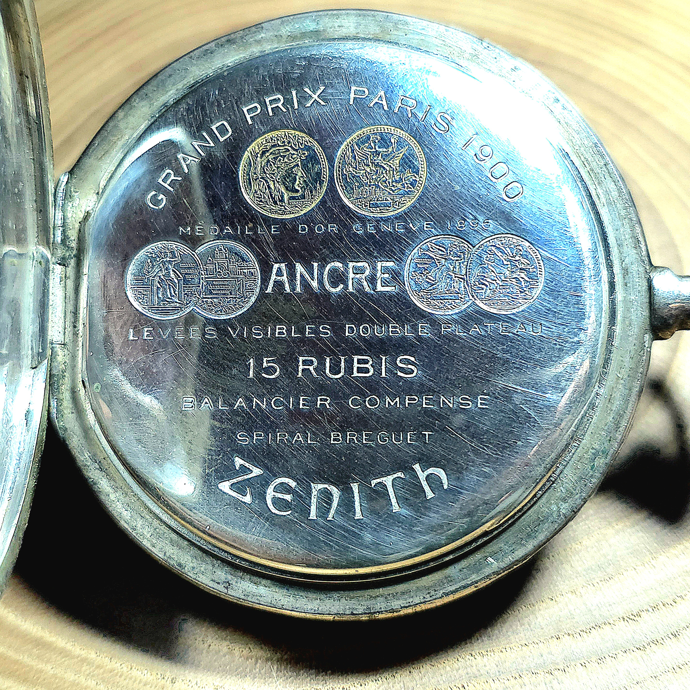
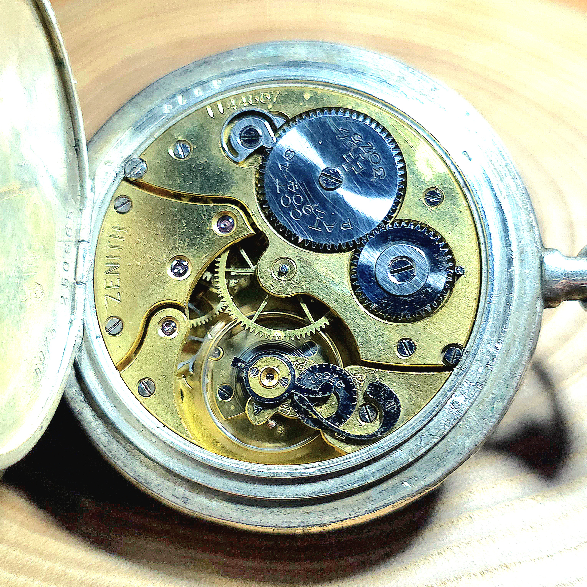
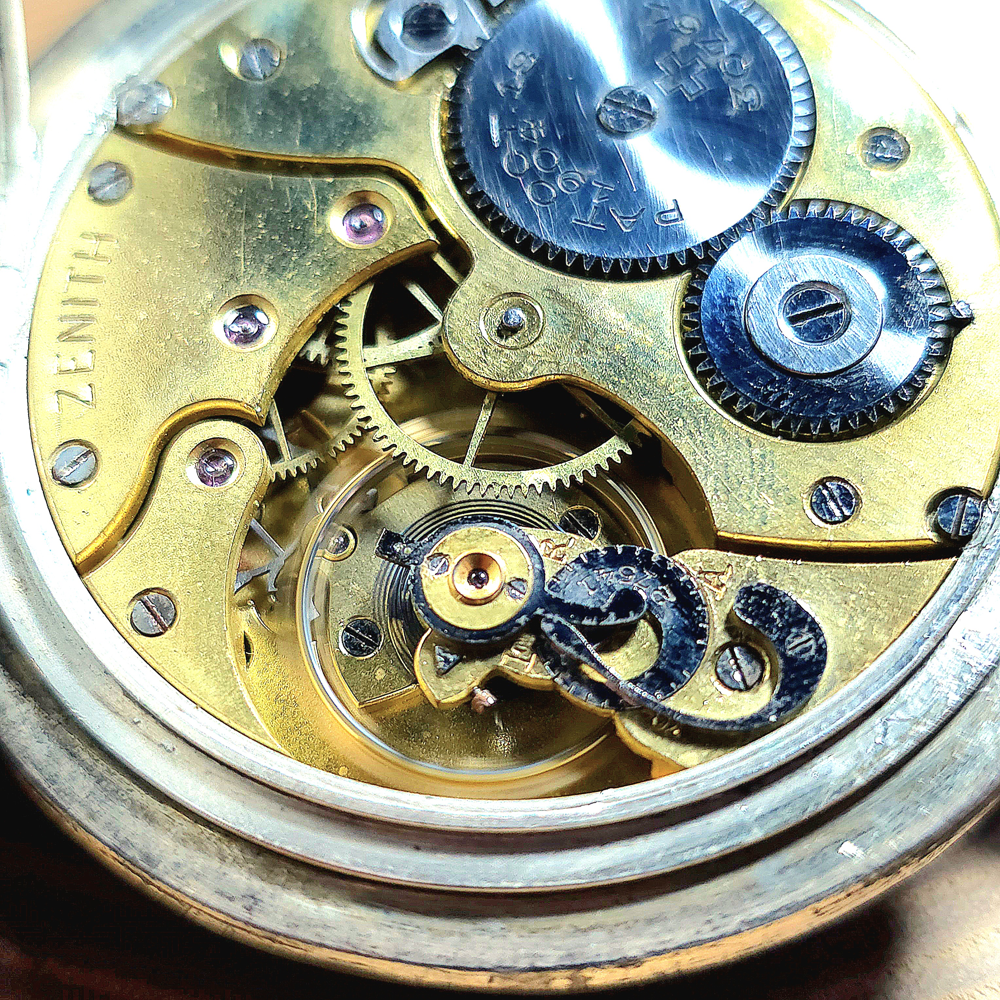
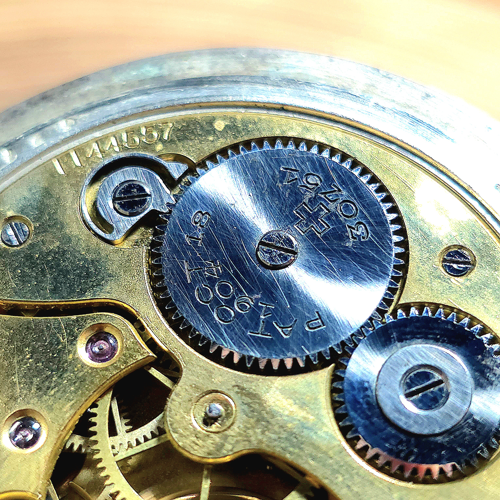
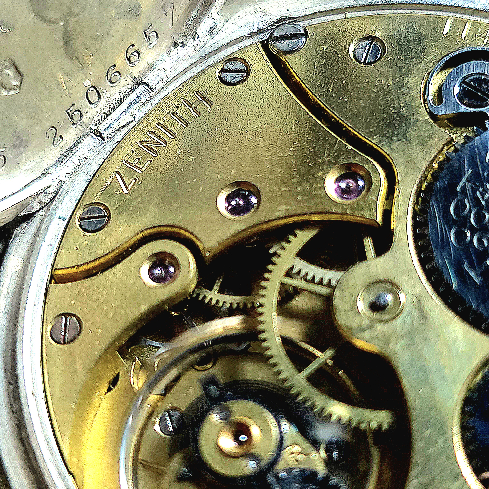

原点回帰。ゼニス(ZENITH) アンティーク懐中時計の修復と歴史的意匠

記念すべきAtelier MUSUBIの修理実績録、第一号は「ZENITH（ゼニス）」のアンティーク懐中時計です。私自身のコレクションの一つで、時計人生が1本のゼニスから始まったこともあり、非常に感慨深い修理になります。
美しいポーセリン（エナメル）ダイヤルに、ブレゲ数字と趣のある時分針。時代を経ても色褪せないアンティークならではの静謐な佇まいがあります。

裏蓋の内側（キュベット）を開けると、この個体が持つ歴史の重みが姿を現します。中央上部に誇らしげに刻まれているのは、ゼニスがその圧倒的な精度と技術力を世界に知らしめた1900年のパリ万博でのグランプリ（金賞）受賞のメダル刻印です。
さらに「15 RUBIS（15石）」「SPIRAL BREGUET（ブレゲひげゼンマイ）」「BALANCIER COMPENSE（切り分銅付きバイメタル温度補正テンプ）」など、当時の高級機にのみ許されたハイスペックな仕様が誇らしく彫り込まれています。


ムーブメントは、まさにスイス伝統の金仕上げ（ギルトムーブメント）。受け板の面取りの美しさ、精度を微調整する精緻な微動緩急針の構造には、ゼニスの取得した特許技術が盛り込まれています。現代の大量生産品にはない「人の手による執念」が宿っています。
丸穴車・角穴車の歯車の磨き一つをとっても、当時の職人の息遣いが聞こえてくるようです。長い眠りについていたこの歴史的遺産を、現代のオイルと微細な調整によって再び力強く鼓動させる。時計技術者として、これ以上ない喜びと使命感を感じる瞬間です。


さらにマクロレンズで迫ると、パーツの角が一つひとつ丁寧に落とされ、鏡面のように磨き上げられていることが分かります。こうした見えない部分へのこだわりこそが、100年以上経った今でもパーツを生き長らえさせ、修復を可能にする本物のクオリティです。この通称キャリバーZENITHはその完成度の高さからゼニスの社名ともなり受け継がれてきました。